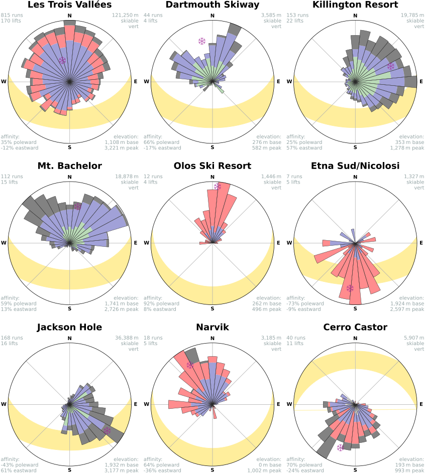

OpenSkiStats: a global webapp of geospatial ski area metrics reveals the orientation of alpine skiing
This manuscript is an incomplete in-progress draft.
Abstract
We present OpenSkiStats, the first open, global, and continuously updating resource of downhill skiing summary statistics. The initial focus of OpenSkiStats is to provide spatial statistics of ski areas and their runs, in particular, the orientation of ski runs. Data is sourced from OpenSkiMap, a project to extract and visualize skiing related features from the crowd-sourced OpenStreetMap. OpenSkiMap provides a resource of 6,935 downhill ski areas in 70 countries and 94,690 downhill ski runs comprised of XX segments.
Introduction
There are an estimated 135 million alpine skiers worldwide, resulting in 350-380 million visits to ski areas per year [1]. Mountain tourism is estimated to drive up to 16% of international tourist arrivals worldwide (~375 million in 2019) [2]. In the United States, outdoor recreation accounted for 2.3% of the gross domestic product in 2023 by adding $639.5 billion in value to the economy. $3.9 billion directly [3]
In the United States, outdoor recreation generated $1.2 trillion in economic output or 2.3% of the gross domestic product in 2023 [3, Table 10]. $3.9 billion in value added is directly [3, Table 2]
Existing scholarly literature related to downhill skiing is limited and primarily focuses on economics [4], health impacts, avalanche science [5], environmental sustainability [6,7,8], the threat from climate change [9,10,11,12,13], or ski trail routing algorithms [14,15]. We present one of the first scholarly accounts of the spatial metrics of ski areas on a global scale.
An open and global database and analysis of ski areas will help inform skiers, while providing insights to industry stakeholders. There are a variety of existing resources that compile information of ski areas. Both OnTheSnow and OpenSnow contain a global database of ski areas and metrics, with a focus on snow and weather conditions. However, neither makes their source code or data openly available. Stuart Winchester maintains several manually curated tables of ski areas, which are discussed in articles on the Storm Skiing Journal and Podcast. Laurent Vanat reports on aggregate ski areas metrics in his annual International Report on Snow & Mountain Tourism. Other resources focus on specific regions including New England Ski History, Wikipedia’s Comparison of North American ski resorts, and Vertical Feet. Other resources focus primarily on ski lifts, including Liftie (open source) and Lift Blog. Skimap.org compiles official trial maps produced by ski areas.
Here we base our analysis on OpenStreetMap and OpenSkiMap.
OpenStreetMap is a collaborative map of the world available under an open license. Since its launch in 20024, geospatial data has been continuously contributed by a global community of volunteers and companies [16]. The platform’s crowdsourced nature ensures frequent updates and granular detail, with contributors adding information on features such as roads, buildings, natural landscapes, and, crucially for this study, ski areas and their trials and lifts. Individual users often contribute to specific domains. For example, study author Daniel Himmelstein previously helped complete and align the Long Trail, a long-distance hiking trail in Vermont [17]. Meanwhile, the company Amazon contributed missing roads, driveways, and vehicle routing restrictions to aid in their delivery operations. This mosaic of interests has resulted in an exceptionally broad and diverse collection of volunteered geographic information, albeit with varying levels of detail by region. This breadth along with OpenStreetMap’s open license and availability have made it an invaluable tool for extracting and analyzing spatial data across a range of scientific disciplines [18].
OpenStreetMap provides its own general purpose frontend to view a rendered maps of the world. Specialized frontends have arisen to refine, analyze, and render maps for particular applications. Examples include OpenRailwayMap for railroads, OpenCycleMap for bicycling, Waymarked Trails for hiking routes, OpenSeaMap for seafaring and nautical pursuits, Wheelmap for wheelchair accessibility, and Open Infrastructure Map for electrical and telecommunication transmission. OpenSnowMap and OpenSkiMap display both nordic and alpine skiing information.
OpenSkiMap refines data from OpenStreetMap along with Skimap.org to create an interactive map of the world that highlights ski areas, runs, and lifts along with associated metadata like run difficulty. OpenSkiMap is created and maintained by Russell Porter, with much of its code openly available. OpenSkiMap releases refined datasets of ski areas, runs, and lifts as GeoJSON downloads that update daily. Since OpenStreetMap does not include granular elevation data, OpenSkiMap incorporates TerrainRGB, which merges elevation data from multiple providers. Global coverage is provided by the Japan Aerospace Exploration Agency (JAXA) AW3D30 [19].
The founding motivation of this study was to examine trends in ski trail orientations. The orientation of a ski trail is a major influencer of sunlight exposure. On a local level, orientation affects weather patterns and climate, although in less generalizable ways than it does sunlight. We were unable to find a systematic analysis of or database containing ski trial orientations. In 2006, Alpine Zone Forum user Jonni compiled a manual and qualitative list of the primary orientation for 37 ski areas in Vermont, Maine, and New Hampshire. Hence, we set out to create a global, continuously updating, open, and accessible resource for browsing ski areas and their orientations.
A second motivation was Geoff Boeing’s analysis — first by blog and later publication [20] — of city street orientations from OpenStreetMap. Boeing tabulated street segments by their orientation into polar histograms (i.e. roses) to show whether a city’s roads were neatly arranged into a grid like Manhattan or a spaghetti mess like Boston. Boeing released the modular code underlying his analysis in the osmnx Python package [21,22], which we use sometimes directly and other times as a reference. Boeing’s street roses take inspiration from wind roses, which summarize the direction of wind [23]. Wind roses themselves take inspiration from the compass rose, an ancient visualization steeped in tradition and symbolism [24,25].
Main text
Run counts: (with segments and points)
- geometry filter
- downhill filter
- coordinate filter (remove elevation voids)
- vertical drop filter
- downhill ski area
- ski resort
Ski area counts (potentially lifts as well?)
- downhill in uses
- operating
- named filter
- resort filter
Data completeness
Number of Ski Areas
OpenSkiMap contained 12,111 ski areas with 6,935 of those assigned a downhill usage.
Laurent Vanat’s 2022 International Report on Snow & Mountain Tourism compiled primarily national level data to report on global ski area metrics [1]. Vanat identified 5,764 ski areas worldwide, when limiting to “equipped outdoor ski areas covered with snow”, which excludes “indoor facilities, mountaineering-only areas, and other types of facilities such as dry slopes.” The 1,945 ski areas with 5 or more lifts qualified as a ski resort, of which 52 were deemed as major based on a threshold of “1 million skier visits per winter season”. OpenSkiMap contained 5,110 operating downhill ski areas with one or more lifts (i.e. equipped) and 1,639 with 5 or more lifts. This equates to 89% and 84% of Vanat’s respective counts. Vanat identified “68 countries offering equipped outdoor ski areas covered with snow” compared to 70 in our analysis.
Stuart Winchester identified 505 active ski areas in the United States as of 2023 [26]. Winchester required ski areas to have one or more lifts, a snow surface, operated for at least 1 day in the last season, excluding areas operating solely for personal use. OpenSkiMap contains 524 downhill, equipped, operating ski areas in the United States.
We observe a striking difference in the amount of skiing infrastructure between the northern and southern hemispheres. The northern hemisphere is home to 41 times the combined vertical drop, 44 times the number of runs, 46 times the number of lifts, and 64 times the number of ski areas than the southern hemisphere.
Skiing is further concentrated in the northern hemisphere within a narrow latitude band (Figure 4 (b)). 73.1% of the world’s skiable vert is located between 40–50°N and 43.1% is between 45–58°N.
Ski area influence
Orientation findings

Roses for select ski areas. Roses for 9 ski area from around the world show a range of orientation distributions. Les Trois Vallées of France is the largest ski area in the world. The Dartmouth Skiway of the United States shows a bimodal distribution due to its two peaks. Killington Resort is primarily east facing with a slight northern preference due to the direction of the spine of the Green Mountain. At Mt. Bachelor, one can ski a stratovolcano where beginner terrain is primarily northeast facing, while the advanced terrain is primarily northwest facing. The authors joke that should someone be a fast learner, they could stay in the sun all day at Mt. Bachelor by starting in the beginner eastern terrain in the morning and progressing to the advanced western terrain in the afternoon. Olos of Finland is the darkest ski resort in the world due to its 67.9°N latitude, north-facing orientation, and sloping terrain as calculated by our solar irradiation estimator. Etna Sud Nicolosi of Italy is the sunniest ski resort in the world due to its 37.7°N latitude and south-facing orientation. Jackson Hole is the the most southward (i.e. equatorward) facing ski resort in the United States with over 12,000 m in total skiable vert. Narvikfjellet of Norway is the northernmost ski resort (≥ 5 lifts) in the world at 68.4°N, while Cerro Castor of Argentina is the southernmost at 54.7°S. Notice how the sun’s path changes by hemisphere.
Deduplication of effort: OpenStreetMap used by Strava, mapy.cz, mapbox, komoot, REGRID etc. Single place to curate the world’s ski areas
We extract all segments comprising ski runs
Orientation versus aspect
Aspect applies to polygons and lines. Most polygon runs also have a line run Orientation only applies to lines In the absence of trees, aspect would be a better indicator of sun exposure. However, with shading of trees, orientation could be a better indicator of sun exposure Weighting by vertical drop along a segment, likely brings orientation closer to aspect under the assumption that steeper trails are more likely to descend along the fall line. Orientation was more readily available because it just requires the coordinates of the run (latitude, longitude, elevation), which OpenSkiMap includes, and does not require computation on adjacent terrain. Ski trails that traverse the fall line are often graded, would the resolution of aspect measurements be sufficient Orientation might be more relevant for skiers ???
Weighting segments by vertical drop. Downhill skiing is the art of descent. On flat terrain, the is no terrain shading based on topography
Topographic shadowing versus vegetative shadowing
From https://www.bromley.com/about/:
Bromley is the only major ski area in New England with a southern exposure, giving our guests sun-drenched smiles!
Discussion
Warren Miller once said, “The best place in the world to ski is where you’re skiing that day.” Miller’s quote is a useful reprise against decision paralysis or a fear of missing out by stressing that getting out and skiing somewhere along with a positive attitude are the necessary ingredients to a positive experience. Yet, it is undeniable that conditions and logistics make a big impact on the experience. Furthermore, each day skiing represents a large investment in terms of time and the cost of lift tickets, gear, and travel. Accordingly, OpenSkiStats serves the large contingent of savvy skiers who seek exhaustive metrics into ski areas. Such skiers meld observations on their own experiences with the data-driven insights provided by OpenSkiStats to create mental models on what factors of a ski area matter most to them and how these factors interact with conditions in search of the ultimate experience.
Open infrastructure for skiing. Open source is critical for longevity and preservation. collecting examples of ski infrastructure that have been lost
Methods
Run Difficulty
Difficulty assigned by ski area.
OpenSkiMap extracts run difficulties from OpenStreetMap according to the piste:difficulty key. We condense difficulties into a simplified set as follows: easy combines novice and easy; intermediate combines intermediate; advanced combines advanced, expert, extreme, and freeride; and other combines other and missing.

piste:difficulty key.
Sunlight
Solar irradiance is computed at the level of a run segment, as defined by its latitude, longitude, elevation, bearing, and slope. The segment is treated as a plane, analogous to a solar panel allowing us to use the pvlib photovoltaic modeling library for these calculations [27]. The Ineichen and Perez model with Linke turbidity estimates diffuse normal irradiance, global horizontal irradiance, and direct horizontal irradiance, under the assumption of a clear sky. We compute irradiance at 15 minute intervals for the duration of a typical 120 day ski season — December 1 to March 31 in the northern hemisphere and May 31 to September 28 in the southern hemisphere for the 2024 ski season. We average the irradiance over the ski season to compute solar irradiation in kilowatt-hours per square meter per day (kW/m²/day) along the segment. When averaging irradiation across segments, like when aggregating to the level of a run or ski area, we weight by the vertical drop of the segment.
Some shortcomings of these estimates are that they do not account for cloud cover, shadowing due to vegetation, and shadowing due to topography both on a micro (fine topographic variation like boulders, cliffs, moguls, etcetera) and macro scale (higher terrain like ridges or summits that block sunlight). We specify a surface type of snow in pvlib, which sets an albedo of 65%, i.e. snow reflects 65% of incoming light.